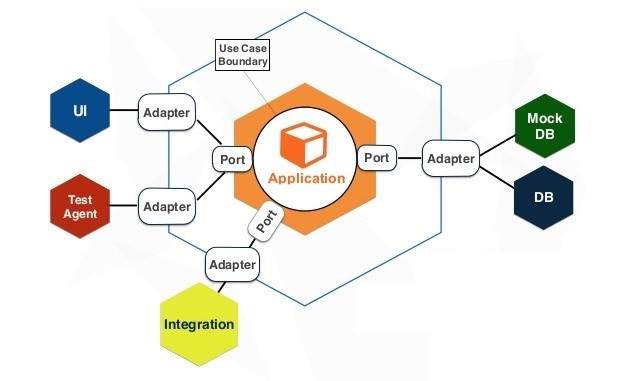

Hexagonal Architecture was formally penned by Alistair Cockburn in the late 90s but really the name Hexagonal Architecture is a little misleading; it can lead us to believe that our application should be defined by 6 known sides.
An example of what Hex. is not!

But this can be confused for nTier architecture. A pattern typically associated with a monolith application and it's important to understand that this is fundamentally a different approach.
The name Hexagonal is a metaphor for elements intersecting but it is otherwise known as Ports & Adapters and for me, better explains the principals and helps us understand the fundamentals.
Known problems with nTier architecture are with dependencies between layers which lead to leaky abstractions. The classic example of this is when we reuse our Domain models over presentation and data layers.
However Hex. Architecture suggests you create your application to work independently of a UI, database or CLI for example. The quote below is taken from Alistair's website and summaries quite well as to how the architecture is defined.
Allow an application to equally be driven by users or programs and to be developed and tested in isolation from its eventual run-time device
This approach forces each port to be independently testable and subsequently helps us build reusable software.
This is what makes Hex. so compelling for me. I am currently working for a client who uses a dozen different CM and CRM systems. Using Hex. architecture allows me to build the desired logic independently of either of these systems, write automated tests to validate the behavior and then come the time we want to integrate there will be no surprises.

Hex by Example:
Im working on doing a lightning talk on Hex. Architecture with an accompanying demo so ill follow up this post with those slides and reference to the repo.
For now, below is designed to help you understand how many ports would be used to create a coffee machine.
A coffee machine controller has four natural ports: the user, the database containing the recipes and prices, the dispensers, and the coin box

Ports and Adapters can further be defines as the following while using Pseudo-code to demonstration the relationship.
Ports are interfaces
interface ICoinBox {
bool Insert(IAmAMonetryValue value);
}
Adapters are implementations
class GbpCoinBox : ICoinBox {
bool Insert(Gbp value) {
...
}
}
Putting it all together
It is all glued together using Bob Martin's Dependency Inversion principal. A modular approach for decoupling module implementation details. Easily allowing us to interchange test harnesses for user interfaces as and when required.
Net result is well made coffee.
Thats it for now. Thanks for reading. Please leave comments or links to related posts.